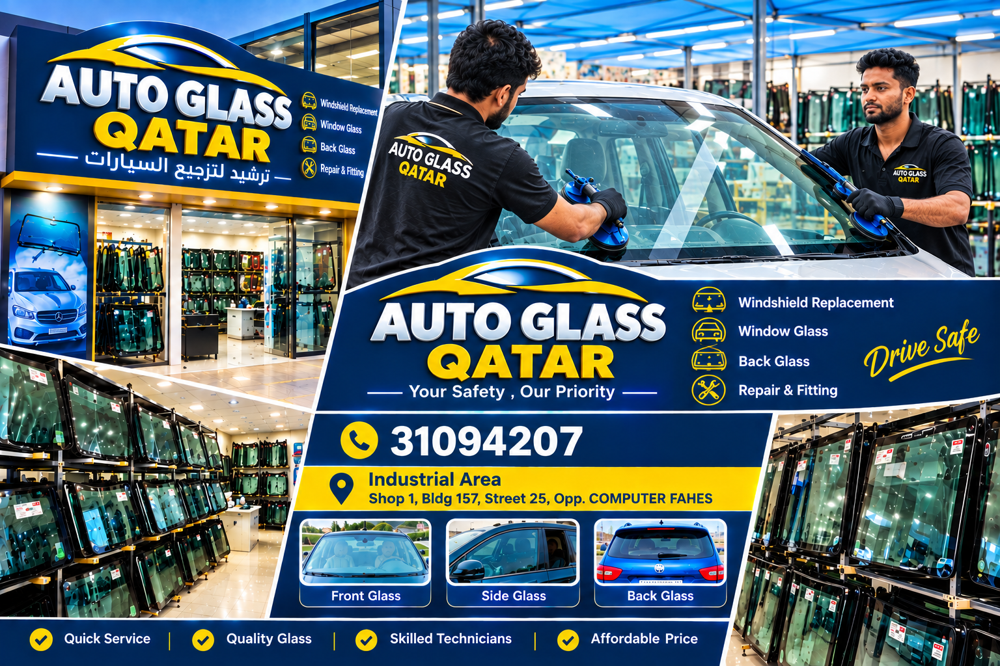
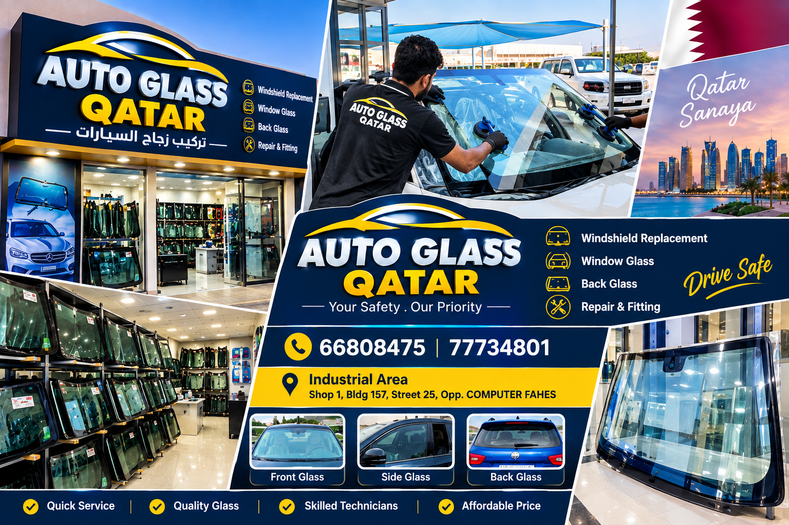
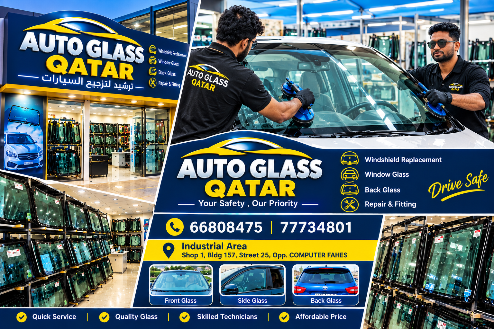

OUR SERVICES
Complete Auto Glass Solutions
From small repairs to full windshield replacement, we help keep your vehicle safe and ready for the road.

🛠️
Glass Repair
Repair suitable chips and cracks with careful professional work.

🚘
Windshield Replacement
Front glass replacement and accurate fitting for vehicles.
🪟
Window Glass
Side and rear glass solutions for different vehicle models.

✨
Tint Film
Clean film application for a neat and comfortable finish.

🏪
Glass Selling
Auto glass available for customers looking for replacement glass.

📦
Glass Rack
Organized glass stock for quick selection and service.